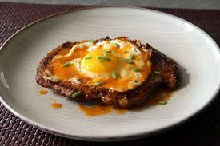

Minute Steak and Egg with Red Hot Butter Sauce

Description
Start your day with this breakfast of champions. A juicy, tender sirloin steak topped with a perfectly fried egg and a red hot butter sauce is ready to enjoy in just minutes!
Ingredients:
- 1 (6 ounce) top sirloin steak
- 4 teaspoons fine dry bread crumbs
- salt and freshly ground black pepper to taste
- 2 tablespoons clarified butter, melted
- 1 large egg
- 1 teaspoon clarified butter, melted
- 2 teaspoons butter, at room temperature
- 1 tablespoon Louisiana-style hot sauce
- 2 teaspoons water (Optional)
- 1 teaspoon sliced green onions
Directions:
- Place steak between two pieces of plastic wrap and pound to a ¼-inch thickness. Season one side generously with salt and pepper, then sprinkle ½ of the bread crumbs over top. Place the plastic wrap back over the steak and pound a few times with the meat mallet. Repeat to season the other side with salt, pepper, and remaining bread crumbs.
- Set a pan over high heat. Add 2 tablespoons melted clarified butter and wait until it starts to smoke. Quickly and carefully add steak to the pan and cook for 1 minute. Flip steak and reduce heat to medium-high; cook until you see a little bit of pink juice pool on top of the steak, about 1 more minute. Flip again, turn off the heat, and transfer steak to a warm plate.
- Let the pan cool for 30 to 60 seconds, then add 1 teaspoon melted clarified butter. Turn heat to medium and add egg. Break the egg white so it's all the same thickness and the yolk is in the center. Add a pinch of salt and cook until egg white is cooked through with brown and crispy edges. Place the egg on top of the steak.
- Add room temperature butter and hot sauce to the warm pan. Swirl the pan until the butter has melted and emulsified into the hot sauce. Stir in water if sauce is too thick or starts to separate.
- Spoon sauce over steak and egg, and garnish with chives.